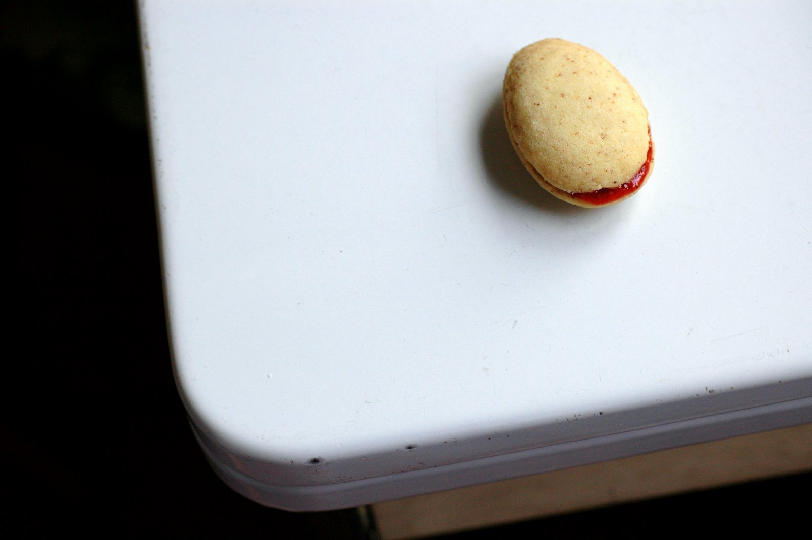
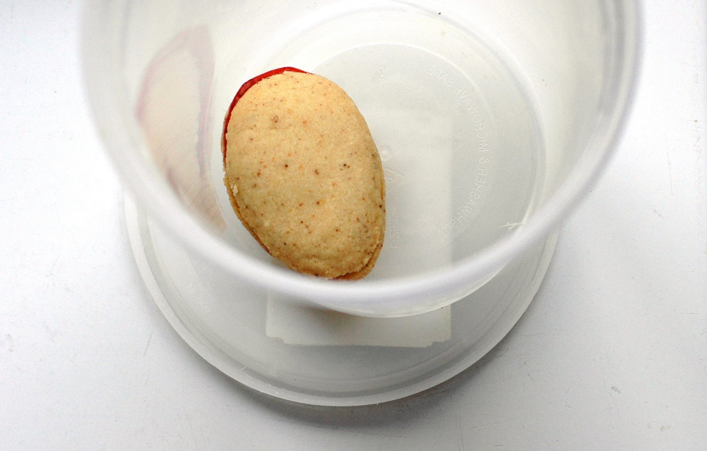

Month: December 2007
So much better
You guys really are terrific. I dropped the ball last week, I know, with all this book nonsense and blah blah blah, but you were so nice. Your congratulations and good will cheered me right through to the end – to Thursday morning at approximately 11 am, when I said so long to our old friend Man U. Script. He’ll be back soon enough, I fear, but he’s gone for now, and that’s good enough for me. Darn good, in fact.
And hey, I wrote a book! Goodnight. How on earth did that happen? I didn’t know I had it in me, really, until it was done. Life o’ mine, you are full of surprises – and also dirty dishes, and dirty laundry, and dust bunnies. I spent Thursday afternoon scrubbing the kitchen sink, sweeping the bathroom floor, and going through mail that had been sitting next to my desk since October. October, people. Then I watched four episodes of Law & Order: Criminal Intent (I have an itty bitty crush on Vincent D’Onofrio; don’t tell); ate two pains au chocolat; danced around to the Pixies’ Surfer Rosa for a couple of hours; and finally, yesterday, fell asleep curled around a pile of warm laundry and missed most of the afternoon, including a holiday party at the home of friends.

Oh yeah. I also made toffee, chocolate blocks, banana bread, and brown butter cookies spread with homemade strawberry jam.
{kind=link}
Brown. Butter. Cookies.
I feel so much better. About everything.

I clipped the recipe for these little beauties two years ago, but it took me until now – my priorities have been totally out of line – to try them. But better late than never, I say, because they’re lovely. For one thing, they’re some of the prettiest cookies I’ve ever seen. Shaped in the well of a teaspoon – a tad tedious, yes, but therapeutic in a way, and totally worth it – they turn out smooth and curvy, the approximate size and shape of a flattened egg. They’re pale gold and flecked with toasted bits of butter, and you sandwich them with a festive sash of jam across the waistline. They’re sophisticated but still approachable, eminently edible. If they were human, you’d want to pinch their cheeks and buy them a drink.
{kind=link}
Then, of course, there’s the flavor: intensely buttery, warm and rich, and ever-so-slightly nutty, with a sandy crumb that melts instantly on the tongue. They remind me a bit of Pecan Sandies® – only minus the pecans and plus jam. (If you grew up, as I did, with Pecan Sandies®, you’ll know that’s high praise.) Their creator, Celia Barbour, calls them “the best cookies in the world,” and while I’m not quite ready to go that far – they don’t, after all, contain chocolate – I think she’s onto something. I can’t imagine a better cookie for dunking in a mug of coffee on Christmas Day. They’re coming along in my carry-on tomorrow morning, when we fly to the East Coast for the holidays. I’ll be back in a couple of weeks, with an empty cookie tin in tow.
Friends, I wish you the very happiest of holidays. It’s been quite a year, and I’ve loved spending it with you.
Brown Butter Spoon Cookies with Jam
Adapted from Gourmet, December 2005
I’m not going to tell you that these are the world’s easiest cookies, because they do take a bit of time and technique. But I will tell you that they’re outlandishly delicious, and that there’s something terrifically calming about shaping and assembling them, even if it does take a while. Plus, the dough is wonderfully simple – maybe the simplest I’ve ever made. You make it right in the saucepan! Neat-o.
As for shaping the dough, well, it’s a little tricky at first, but after the first 10 or 12, you’ll find yourself settling into it: instinctively knowing how much dough to use for each cookie, how to press it just so into the bowl of a teaspoon, how to slide it out. By the second pan, it was actually going pretty quickly. Oh, and don’t worry about little imperfections: the heat of the oven will soften and smooth them.
Lastly, about the preserves: Celia Barbour recommends using a mixture of half cherry and half strawberry, but I used only strawberry. Whatever you choose, make sure it’s a jam you love. My strawberry jam was homemade, left over from a recipe project this fall, and its flavor was terrific with the brown butter cookie.
2 sticks (1 cup) cold unsalted butter, cut into cubes
¾ cup granulated sugar
2 tsp. vanilla extract
2 cups unbleached all-purpose flour
1 tsp. baking soda
1/8 tsp. salt, slightly rounded
Heaping 1/3 cup fruit preserves
To make the dough:
Fill the kitchen sink with about 2 inches of very cold water.
In a medium heavy saucepan, melt the butter over moderate heat and cook, stirring occasionally, until the butter turns golden and smells nutty and flecks on the bottom of the pan turn a rich caramelly brown, about 10 to 12 minutes. (Butter will initially foam a bit, then dissipate. A thicker foam will appear and cover the surface just before the butter begins to brown; stir more frequently once this occurs.) Remove the pan from the heat and place it in the sink to stop the butter from cooking further. Cool, stirring occasionally, about 4 minutes. Remove the pan from the sink, and stir in the sugar and vanilla.
In a medium bowl, whisk together the flour, baking soda, and salt. Add to the butter mixture and stir until a dough forms. Shape the dough into two balls – or one, but it’s a little unwieldy – and wrap in plastic wrap. Set aside at room temperature for 1 to 2 hours to allow the flavors to develop. (Alternatively, chill dough balls until you’re ready to use them. Allow the chilled dough to soften at room temperature for at least one hour before shaping into cookies and baking.)
To shape and bake the cookies:
Set an oven rack in the middle position, and preheat the oven to 325°F.
Choose a teaspoon with a deep bowl. (I used an antique silver teaspoon; older spoons in general, I find, have nice deep bowls. Do not use a measuring spoon.) Pinch off a small bit of dough from one of the balls and press it into the bowl of the spoon, flattening the top. The dough will feel crumbly, but as you press and mold it, it will become cohesive. Pressing gently, slide the shaped dough out of the spoon and place it, flat side down, on an ungreased baking sheet. (I lined mine with a silicon liner for easy clean-up.) Continue forming cookies and arranging them on the sheet pan; you should be able to fit about 18 cookies. Bake the cookies until just pale golden, about 8 to 15 minutes. Cool them on the sheet pan on a wire rack for 5 minutes; then transfer them to the rack and cool completely. Meanwhile, continue shaping and baking more cookies until all the dough is gone. You should be able to make about 60 to 70 cookies in all.
To assemble the cookies:
While the cookies cool, heat the preserves in a small saucepan over low heat until just runny. Pour and scrape through a sieve into a small bowl to remove seeds and solids. Cool completely. (I stuck mine in the fridge for a few minutes.)
Working with one cookie at a time, spread the flat side with a thin layer of preserves. Sandwich with the flat side of a second cookie. Continue with the remaining cookies and preserves. Let the finished cookies stand until the jam is set, about 45 minutes.
Transfer cookies to an airtight container and wait 2 days – really! – before eating to allow the flavor to develop. (Or, if making them well in advance, freeze them.)
Yield: 30-35 sandwich cookies
Thursday, Thursday, Thursday.
Hi, friends. I had the best intentions. I did. I was going to tell you about another cookie today, and a really good one too. But a visitor has been staying with us lately, and he won’t let me into the kitchen. He’s big and burly, 90,000 words tall. His name is Man U. Script, and he’s a bruiser. He’s bossy and demanding, and he makes me sit at my desk for hours and hours and hours. But the good news is that, at long last, he’s leaving on Thursday. He’s getting into a FedEx box and going to New York to hang out with my editor. I can hardly believe it. I don’t know whether to open a bottle…
Read moreThe cookie-baking part
The rains, oh, the rains. They have come. Yesterday, while those of you on the East Coast were reveling in fresh snow on the windowsill, we woke to rain thumping on the roof. Despite what you might have heard about Seattle, this isn’t our usual kind of weather. Our rain is more of a fine mist, a la di da sort of rain – definitely not a thump-thump. We went out for croissants and grapefruit juice anyway, in spite of the downpour, but as we huddled uncomfortably under a single umbrella – we seem to have lost our second one; it’s going to be a long, wet season – Brandon turned to me and said, woefully, “Remind me – winter…
Read more